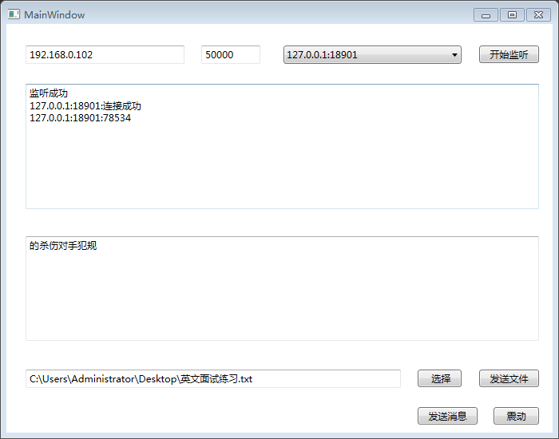
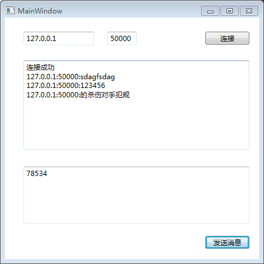

进程类
获得所有的进程
Process[] pros = Process.GetProcesses();
foreach (var item in pros)
{
Console.WriteLine(item);
}
Console.ReadKey();
|
通过进程打开应用程序
Process.Start("calc");
Process.Start("mspaint");
Process.Start("notepad");
Process.Start("iexplore", "https://www.baidu.com");
|
通过进程打开指定文件
ProcessStartInfo psi = new ProcessStartInfo(@"D:\a.txt");
Process p = new Process();
p.StartInfo = psi;
p.Start();
|
多线程
单线程带来的问题
程序在同时做多件事情的时候，会出现卡死状态。
为什么要用多线程
- 让计算机同时做多件事情，节约时间。
- 多线程可以让一个程序同时处理多个事情。
- 后台运行程序，提高程序的运行效率，也不会使主界面出现无响应的情况。
- 获得当前线程和当前进程。
前台线程和后台线程
前台线程：只有所有的前台线程都关闭才能完成程序关闭。
后台线程：只要所有的前台线程结束，后台线程自动结束。
产生线程的步骤
Thread th = new Thread(Test);
th.IsBackground = true;
th.Start();
|
注意：调用Thread实例的Start方法，标记该线程可以被CPU执行了，但具体执行时间由CPU决定。
跨线程访问
在.NET下，是不允许跨线程访问的。
private void Test()
{
for (int i = 0; i < 10000; i++)
{
textBox1.Text = i.ToString();
}
}
|
解决方法，不让程序检查到跨线程访问
Control.CheckForIllegalCrossThreadCalls = false;
|
在WPF中，解决跨线程访问的问题
Dispatcher.BeginInvoke(DispatcherPriority.Normal, new delegate1(ShowMsg), socketSend.RemoteEndPoint.ToString() + ":" + "连接成功");
|
Thread类的重要成员
- Start()启动线程，告诉CPU线程可以被执行，具体什么时候执行，由CPU决定。
- Abort()终止线程，终止完成之后不能再Start()。
- Thread.Sleep(1)，静态方法，可以使当前线程停止一段时间运行。
- Name线程名。
- Thread.CurrentThread获得当前的线程引用。
Socket网络编程
概念
socket的英文原义是“孔”或“插座”。作为进程通信机制，通常称为“套接字”，用于描述IP地址和端口号，是一个通信链的句柄。（其实就是两个程序通信用的）
TCP和UDP协议
TCP：3次握手，必须要有服务器。特点是安全，稳定，但是效率低。
UDP：快速，效率高，但是不稳定，容易发生数据丢失。
服务端Server

主要思路
- 点击开始监听时，在服务器端创建一个负责监听的Socket。通过IPAddress.Any或手动配置IP的方式，创建IP和端口号并绑定。
- 新建一个线程，等待客户端的连接，并创建与之通信的Socket。（解决等待连接时，程序假死状态的问题）
- 在监听的过程中，新建一个线程，不停地接收客户端发送过来的消息，并填充到相应对话框中。
- 点击发送消息按钮，将文本框中的内容以字节的方式发送给相应的负责通信的Socket对象。
- 点击选择按钮，打开文件对话框。选择要发送的文件后，将文件的路径填充到TextBox中。
- 点击发送文件按钮，将要发送文件的路径用FileStream读取，以字节的方式发送给相应的负责通信的Socket对象。
- 点击震动按钮，发送震动信息（buffer[0]的值为2）给相应的负责通信的Socket对象。
注意：
- socketWatch.Listen(10);的作用是，限制监听的数量，超出的连接需要排队等待。
- 新建线程处理的目的是为了解决程序假死的问题。
- 解决跨线程访问的问题，要用Dispatcher.BeginInvoke（需要定义委托）。
- 使用try-catch语句，其中catch为空。效果是程序出现异常时，不做任何操作，看起来就像没有异常一样。
- 使用Dictionary<string, Socket>将远程连接的IP地址和Socket存入集合中，可以使服务端给不同的客户端发送消息。
- 服务端发送不同类型的消息给客户端时，定义一套协议。发送消息为0，发送文件为1，发送震动为2。
创建负责监听的Socket
private void btnListen_Click(object sender, RoutedEventArgs e)
{
try
{
Socket socketWatch = new Socket(AddressFamily.InterNetwork, SocketType.Stream, ProtocolType.Tcp);
IPAddress ip = IPAddress.Parse("192.168.0.102");
IPEndPoint point = new IPEndPoint(ip, Convert.ToInt32(txtPort.Text));
socketWatch.Bind(point);
ShowMsg("监听成功");
socketWatch.Listen(10);
Thread th = new Thread(Listen);
th.IsBackground = true;
th.Start(socketWatch);
}
catch { }
}
|
等待客户端连接，创建负责通信的Socket
void Listen(object o)
{
Socket socketWatch = o as Socket;
while (true)
{
try
{
socketSend = socketWatch.Accept();
dicSocket.Add(socketSend.RemoteEndPoint.ToString(), socketSend);
Dispatcher.BeginInvoke(DispatcherPriority.Normal, new delegate2(cboUsers.Items.Add), socketSend.RemoteEndPoint.ToString());
Dispatcher.BeginInvoke(DispatcherPriority.Normal, new delegate1(ShowMsg), socketSend.RemoteEndPoint.ToString() + ":" + "连接成功");
Thread th = new Thread(Receive);
th.IsBackground = true;
th.Start(socketSend);
}
catch { }
}
}
|
接收客户端发送的消息
void Receive(object o)
{
Socket socketSend = o as Socket;
while (true)
{
try
{
byte[] buffer = new byte[1024 * 1024 * 2];
int r = socketSend.Receive(buffer);
if (r == 0)
{
break;
}
string str = Encoding.UTF8.GetString(buffer, 0, r);
Dispatcher.BeginInvoke(DispatcherPriority.Normal, new delegate1(ShowMsg), socketSend.RemoteEndPoint.ToString() + ":" + str);
}
catch { }
}
}
|
ShowMsg方法
private void ShowMsg(string str)
{
txtContent.AppendText(str + "\r\n");
}
|
服务器给客户端发送消息
private void btnSendMsg_Click(object sender, RoutedEventArgs e)
{
string str = txtSendMsg.Text.Trim();
byte[] buffer = Encoding.UTF8.GetBytes(str);
List<byte> list = new List<byte>();
list.Add(0);
list.AddRange(buffer);
byte[] newBuffer = list.ToArray();
string ip = cboUsers.SelectedItem.ToString();
dicSocket[ip].Send(newBuffer);
}
|
选择文件
private void btnChooseFile_Click(object sender, RoutedEventArgs e)
{
OpenFileDialog ofd = new OpenFileDialog();
ofd.InitialDirectory = @"C:\Users\Administrator\Desktop";
ofd.Title = "请选择要发送的文件";
ofd.Filter = "所有文件|*.*";
ofd.ShowDialog();
txtFilePath.Text = ofd.FileName;
}
|
发送文件
private void btnSendFile_Click(object sender, RoutedEventArgs e)
{
string path = txtFilePath.Text;
using (FileStream fsRead = new FileStream(path, FileMode.Open, FileAccess.Read))
{
byte[] buffer = new byte[1024 * 1024 * 5];
int r = fsRead.Read(buffer, 0, buffer.Length);
List<byte> list = new List<byte>();
list.Add(1);
list.AddRange(buffer);
byte[] newBuffer = list.ToArray();
dicSocket[cboUsers.SelectedItem.ToString()].Send(newBuffer, 0, r + 1, SocketFlags.None);
}
}
|
发送震动
private void btnShock_Click(object sender, RoutedEventArgs e)
{
byte[] buffer = new byte[1];
buffer[0] = 2;
dicSocket[cboUsers.SelectedItem.ToString()].Send(buffer);
}
|
客户端Client

主要思路
- 点击连接按钮，创建负责通信的Socket，根据输入的IP地址和端口号，连接到远程服务器的应用程序。
- 开启一个新的线程，不停地接收服务器端发来的消息。并且对消息的类型进行判断（文本消息、文件、震动）。
- 点击发送消息按钮，客户端给服务器发送消息，原理和服务器给客户端发送消息一致。
注意：
- 如果接收到服务器端发送来的是文件。打开保存文件对话框，使用FileStream以字节的方式写入文件。
- 接收服务器端发送的消息时，要忽略buffer[0]的标志位，即从1的位置开始解码，有效字节数为r-1个。
连接到远程服务器
private void btnConnect_Click(object sender, RoutedEventArgs e)
{
try
{
socketSend = new Socket(AddressFamily.InterNetwork, SocketType.Stream, ProtocolType.Tcp);
IPAddress ip = IPAddress.Parse(txtServer.Text);
IPEndPoint point = new IPEndPoint(ip, Convert.ToInt32(txtPort.Text));
socketSend.Connect(point);
ShowMsg("连接成功");
Thread th = new Thread(Receive);
th.IsBackground = true;
th.Start();
}
catch { }
}
|
接收服务器发送的消息
void Receive()
{
while (true)
{
try
{
byte[] buffer = new byte[1024 * 1024 * 3];
int r = socketSend.Receive(buffer);
if (r == 0)
{
break;
}
if (buffer[0] == 0)
{
string str = Encoding.UTF8.GetString(buffer, 1, r - 1);
Dispatcher.BeginInvoke(DispatcherPriority.Normal, new delegate1(ShowMsg), socketSend.RemoteEndPoint.ToString() + ":" + str);
}
else if (buffer[0] == 1)
{
SaveFileDialog sfd = new SaveFileDialog();
sfd.InitialDirectory = @"C:\Users\Administrator\Desktop";
sfd.Title = "请选择要保存的文件";
sfd.Filter = "所有文件|*.*";
sfd.ShowDialog();
string path = sfd.FileName;
using (FileStream fsWrite = new FileStream(path, FileMode.OpenOrCreate, FileAccess.Write))
{
fsWrite.Write(buffer, 1, r - 1);
}
MessageBox.Show("保存成功");
}
else if (buffer[0] == 2)
{
}
}
catch { }
}
}
|
客户端给服务器发送消息
private void btnSendMsg_Click(object sender, RoutedEventArgs e)
{
string str = txtSendMsg.Text.Trim();
byte[] buffer = Encoding.UTF8.GetBytes(str);
socketSend.Send(buffer);
}
|
完整代码
另附SocketDemo。Socket实现简单的服务器和客户端之间通信的WPF应用程序。
github地址：https://github.com/zhdaa/SocketDemo